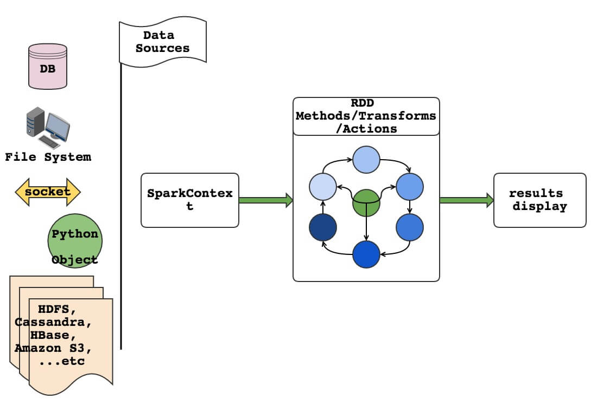
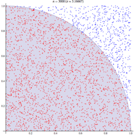
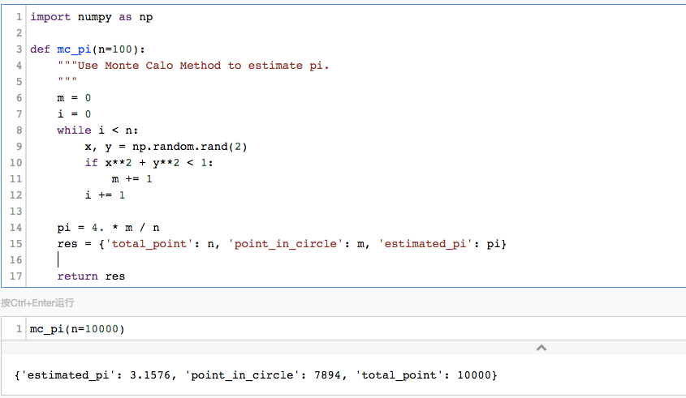

『 Spark 』3. spark 编程模式
2016-03-04
写在前面
本系列是综合了自己在学习spark过程中的理解记录 ＋ 对参考文章中的一些理解 ＋ 个人实践spark过程中的一些心得而来。写这样一个系列仅仅是为了梳理个人学习spark的笔记记录，所以一切以能够理解为主，没有必要的细节就不会记录了，而且文中有时候会出现英文原版文档，只要不影响理解，都不翻译了。若想深入了解，最好阅读参考文章和官方文档。
其次，本系列是基于目前最新的 spark 1.6.0 系列开始的，spark 目前的更新速度很快，记录一下版本号还是必要的。
最后，如果各位觉得内容有误，欢迎留言备注，所有留言 24 小时内必定回复，非常感谢。
Tips: 如果插图看起来不明显，可以：1. 放大网页；2. 新标签中打开图片，查看原图哦；3. 点击右边目录上方的 present mode 哦。
1. spark 基本编程模式
spark 里有两个很重要的概念：SparkContext [一般简称为 sc] 和 RDD，在上一篇文章中 『 Spark 』2. spark 基本概念解析 有讲到。可以说，sc 和 RDD 贯穿了 spark app 的大部分生命周期，从 app 的初始化，到数据的清洗，计算，到最后获取，展示结果。
为了更加深入的了解 RDD 和基于 RDD 的编程模型，我们先把 RDD 的属性简单的分一个类，然后再通过一张流程图来理解。
1.1 RDD 的属性
接触过 RDD 的人肯定都知道 transform 和 action 这两个核心概念，甚至很多人都认为 RDD 仅仅有 transform 和 action 这两个概念。殊不知其实 RDD 里面还有很多其他方法，下面我们来简单的分个类，在看这里的时候最好参考一下官方的 api 文档
- RDD
action: count, take, sample, first, collect …transform: foreach, glom, map …method: cache, checkpoint, id, isCheckpointed, isEmpty, keys, lookup, max, mean, name, setName …property: context
看到了吗，这里其实 RDD 其实有很多既不是 transform 也不是 action 的函数和属性，在编写 spark app 的时候，其实很多时候我们都会用到那些 method，这样在开发调试过程中都会更加方便。比如说 cache, setName, lookup, id 这些，在开发过程中都很有用。
1.2 spark 编程模式图

如图所示，我们构建 spark app，一般都是三个步骤:
- 加载数据集，这里的数据集大概分为两组:
- 一种是不变的，静态数据集，大多数场景都是从数据库，文件系统上面加载进来
- 另一种是动态的数据集，一般做 streaming 应用的时候用到，大多数场景是通过 socket 来加载数据，复杂场景可以通过文件系统，akka actors，kafka，kinesis 和 一些第三方提供的 streaming api [twitter 等] 来作为数据源加载数据
- 处理数据，这是重点中的重点，不过不外乎都是从三个方面来完成这里的数据清理，逻辑运算等:
- 自定义的一些复杂处理函数或者第三方包 [下面我们称为函数集]
- 通过 RDD 的 transform，action 和函数集来完成整个处理，计算流程
- 通过 RDD 提供的 cache，persist，checkpoint 方法把一些处理流程中的重要处理节点和常用数据缓存和备份，以加速处理，计算速度
- 结果展示，这里一般情况都是使用 RDD 的 collect，take，first，top 等方法把结果取出来，更常用的是先把结果取出来，放到一个数据库或文件系统上，然后再提供给专门展示结果的另一个 application 使用。
2. 例子：MC [Monte Carlo]
下面我将从几个方面来介绍这个例子：首先是介绍蒙特卡罗方法的基本概念和应用，然后是介绍如何用蒙特卡罗方法来估算 pi 的值，最后是看在 spark 集群中如何用多种方法来实现一个蒙特卡洛应用来计算 pi 的值。
2.1 蒙特卡罗方法介绍
## from wiki
Monte Carlo methods (or Monte Carlo experiments) are a broad class of
computational algorithms that rely on repeated random sampling to obtain
numerical results. They are often used in physical and mathematical problems
and are most useful when it is difficult or impossible to use other mathematical
methods. Monte Carlo methods are mainly used in three distinct problem
classes:[1] optimization, numerical integration, and generating draws from
a probability distribution.
##
总的来说，蒙特卡罗是一种基于随机样本实验来进行估值的一种计算方法。2.2 蒙特卡罗方法估算 pi 值原理
用蒙特卡罗方法估算 pi 值，核心方法是利用正方形和圆形面积的比例：
- 首先，我们在坐标轴上构造一个边长为 1 的正方形
- 其次，我们以 (0, 0) 为圆心，构造一个半径为 1 的圆形
- 此时我们知道这个圆形有 1/4 是在正方形中的，正方形的面积和这 1/4 圆的面积分别是：1 和 pi/4，即 1/4 圆的面积和正方形面积之比刚好是 pi/4
- 然后通过蒙特卡罗模拟，看看这个比例大概是多少，模拟方法如下：
- 随机扔 n 个点 (x, y)，其中 x, y 都在 0 和 1 之间
- 如果 x^2 + y^2 < 1，则把这个点标注为红色，表示这个点落在圆内
- 最后数数有 n 个点中有多少点是红点，即落在圆内，假设点数为 m
- 则这个 1/4 圆的面积和正方形面积的比例应该是：m/n，即 m/n = pi/4 => pi = 4*m/n

2.3 Python 实现蒙特卡罗方法估算 pi 值
import numpy as np
def mc_pi(n=100):
"""Use Monte Calo Method to estimate pi.
"""
m = 0
i = 0
while i < n:
x, y = np.random.rand(2)
if x**2 + y**2 < 1:
m += 1
i += 1
pi = 4. * m / n
res = {'total_point': n, 'point_in_circle': m, 'estimated_pi': pi}
return res
2.4 在 spark 集群中实现蒙特卡罗方法
我们按照上面写的三大步骤来写这个 spark 应用：
- 加载数据集
### iterate number
total = int(100 * 10000)
local_collection = xrange(1, total)
### parallelize a data set into the cluster
rdd = sc.parallelize(local_collection) \
.setName("parallelized_data") \
.cache()- 处理数据
### randomly generate points
def map_func(element):
x = random.random() ## [0, 1)
y = random.random() ## [0, 1)
return (x, y) ## random point
def map_func_2(element):
x, y = element
return 1 if x**2 + y**2 < 1 else 0
rdd2 = rdd.map(map_func) \
.setName("random_point") \
.cache()
### calculate the number of points in and out the circle
rdd3 = rdd2.map(map_func_2) \
.setName("points_in_out_circle") \
.cache()- 结果展示
### how many points are in the circle
in_circle = rdd3.reduce(operator.add)
pi = 4. * in_circle / total
print 'iterate {} times'.format(total)
print 'estimated pi : {}'.format(pi)2.5 Seems a little complex, really?
上面这个例子，可能会让一些初步接触 spark 的人很困惑，”明明几行代码就能解决的问题在 spark 里还有按照这些步骤写这么多代码？难道是老湿又骗我了吗？”。
其实，就从上面这个例子看起来，似乎 spark 真的没有什么优势，但是，上面这个例子的目的是表明 spark 的编程模式，如果你还不相信，可以把模拟次数加到千万或者亿次以上看看效果。
如果，如果你还是纠结于 “我骗了你，spark 没有梦想中的那么好” 的话，那看下面这一行代码吧，它也完成了同样的事情：
### version 1
sc.parallelize(xrange(total)) \
.map(lambda x: (random.random(), random.random())) \
.map(lambda x: 1 if x[0]**2 + x[1]**2 < 1 else 0) \
.reduce(lambda x, y: x + y) \
/ float(total) * 4
### version 2
sc.parallelize(xrange(total)) \
.map(lambda x: 1 if sum(np.random.random(2) ** 2) else 0) \
.reduce(lambda x, y: x + y) \
/ float(total) * 43. Next
下一篇，介绍 spark 的 RDD，之后会单独介绍 spark 的 dataframe 和 datasets。
4. 打开微信，扫一扫，点一点，棒棒的，^_^
参考文章
- spark-rdd-paper : Resilient Distributed Datasets: A Fault-Tolerant Abstraction for In-Memory Cluster Computing
- spark python API
- spark context API
- 机器学习相关数据集-斯坦福
- spark pagerank example
- latex online editor 在线latex公式编辑器
- 阮一峰：蒙特卡罗
- 蒙特卡罗，wikipedia
- 科学网：蒙特卡罗
本系列文章链接
- 『 Spark 』1. spark 简介
- 『 Spark 』2. spark 基本概念解析
- 『 Spark 』3. spark 编程模式
- 『 Spark 』4. spark 之 RDD
- 『 Spark 』5. 这些年，你不能错过的 spark 学习资源
- 『 Spark 』6. 深入研究 spark 运行原理之 job, stage, task
- 『 Spark 』7. 使用 Spark DataFrame 进行大数据分析
- 『 Spark 』8. 实战案例 ｜ Spark 在金融领域的应用 ｜ 日内走势预测
- 『 Spark 』9. 搭建 IPython + Notebook + Spark 开发环境
- 『 Spark 』10. spark 应用程序性能优化｜12 个优化方法
- 『 Spark 』11. spark 机器学习
- 『 Spark 』12. Spark 2.0 特性介绍
- 『 Spark 』13. Spark 2.0 Release Notes 中文版
- 『 Spark 』14. 一次 Spark SQL 性能优化之旅